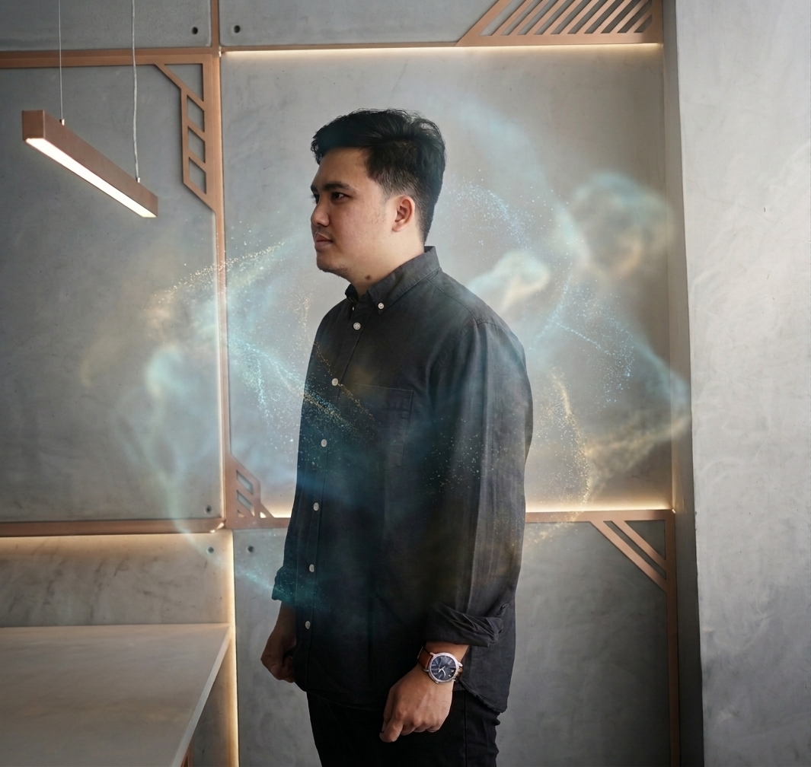

XR designers are a visionary bunch. XR designers shape what doesn't yet exist in the physical world. While many can build VR, AR, and MR applications using engines like Unity3D or Unreal, the real question is: will those applications have meaning?
Designing XR isn’t just about 3D modeling, scripting, or using the latest Gen AI to convert desktop apps into spatial experiences. It requires an innovative, open-minded vision for user experience that goes beyond traditional human-computer interaction. What is your application's purpose? Create meaningful experiences by aligning rich content with the unique strengths of the technology. Let's design an XR future grounded in wisdom.
This website features my collaborative work with students, supervised projects, and my own professional research and design work.